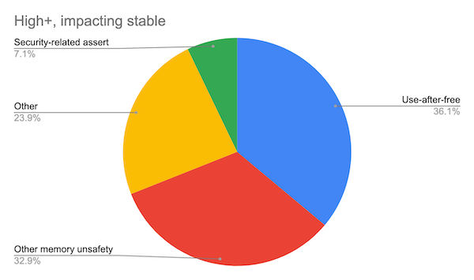

Rust - Short Intro, Ownership
Volker Aßmann (volker.assmann@gmail.com)
12.03.2020
Hello World
Hello X!
What is Rust?
- System language like C++, started at Mozilla
- Main focus
- Safety (memory, threading …)
- Speed (same league as C/C++)
- Good compiler errors
- Very new language (1.0: 2015), rapid development, e.g. new futures/async
- “Editions” to stabilize language
- Currently Edition 2015 and 2018
- Used in: Firefox, System/Embedded Programming, OS/Kernel, Web(assembly)
Tooling
- Compiler - rustc, based on LLVM
rustupfor release management- stable/beta/nightly releases
- cross compilers
- Build tool / packaging: cargo + crates.io
- rustfmt, rustdoc
- IDEs: Vim, VS Code (“Racer” plugin), CLion …
Great Documentation
- On doc.rust-lang.org
- Learning Rust Overview
- Rust Programming Language
- Rust By Example
- Rust Reference
- Rustonomicon (The Dark Arts of Unsafe Rust)
- Others
Constants & Variables
Data Types - Primitive Types
bool,char(4 byte char)- Scalars
- Integer:
i8,i16,i32,i64,u8,u16,u32,u64,isize,usize(defaulti32) - Floats:
f32,f64(defaultf64)
- Integer:
Data Type - Compound Types
// Array
let array: [i32; 5] = [0,1,2,3,4];
// Slice
let slice = &array[0..3]; // 0,1,2
// str - a string slice
let s = "hello";
// Tuple
let tup = ("hello", 42, "world", [1,2,3]);
// Vec (like std::vector)
let v = vec![1,2,3];
// String - UTF-8 encoded growable string, like Vec<char>
let s = String::from("💖");
let v = vec![0xF0, 0x9F, 0x98, 0x88];
let t = String::from_utf8(v).unwrap();Functions
Data Types - Structs
Data Types - Struct Error
- Person def without lifetime on &str would be error
error[E0106]: missing lifetime specifier
--> src/main.rs:4:11
|
4 | name: &str,
| ^ expected lifetime parameter- Anonynous lifetime optional, marks that lifetime is inferred
Data Types - Enums
Much more powerful than in C++
Matching
match is like a powerful switch / if cascade
let x = 2;
let as_string = match x {
1 => "one",
2 => "two",
_ => "sorry, can only count to two..."
};Match needs to be exhaustive (thus the _)
Matching and Enums
Bind values from variant for use in match
Control Flow
Lambdas
Constructors / Destructors
- Copy vs. Clone
Error Handling
Rust uses Result<T,E> type for Error Handling (no exceptions)
#[must_use]
enum Result<T, E> { Ok(T), Err(E) }
fn may_fail(in: &str) -> Result<i32, ParseIntError> {
let x = in.parse::<u8>(); // from trait std::str::FromStr
// let y = x.unwrap(); -- will panic if error, often found in examples
match x {
Ok(i) => println!("The number is {}", i),
Err(e) => { println!("{:?}", e); return e; } // #[derive(Debug)]
}
// Shortcuts:
return in.parse<i32>()?;
return try!(in.parse<i32>());
}Traits
trait Format {
fn format(&self) -> String;
// default impl
fn print(&self) { println!("{}", format(self)); }
}impl Format for i32 {
fn format(&self) -> String {
format!("Int({})", self)
}
}
impl Format for f64 {
fn format(&self) -> String {
format!("Double({})", self)
}
}- Impl only allowed in either trait module or type module!
- No inheritance!
Trait Objects
let x = 42;
let y = 3.14;
let v: Vec<&dyn Format> = vec![&x, &y];
for it in v { println!("Item: {}". it.format()); }
fn do_static<T: Format>(x: T) { println!("{}", x.format()); }
fn do_dynRef(x: &dyn Format) { println!("{}", x.format()); }
fn do_dynPtr(x: Box<dyn Format>) { x.print(); }
do_static(x);
do_dynRef(&y);
do_dynPtr(Box::new(666));Safety
Two languages: SAFE Rust and UNSAFE Rust
- Safe Rust - Compiler ENFORCES lifetimes and sharing rules, sane defaults:
- Automated bounds / integer checks, PANIC!
- Borrow checking / reference integrity checks
- Variables / references immutable by default, no implicit copies etc
- No Undefined Behavior in SAFE Rust !
- Unsafe Rust - disable checks in unsafe {} scope
- Semantic: “the developer has verified that this works!”
- E.g. unsafe traits Send / Sync
Memory Safety: Microsoft
Memory Safety: Chromium
“Around 70% of our high severity security bugs are memory unsafety problems (that is, mistakes with C/C++ pointers). Half of those are use-after-free bugs.” 
(see Chromium.org Security -> Memory Safety)
Ownership
- Three ownership rules:
- Each vaule in Rust has a variable that’s called its owner
- There can only be one owner at a time
- When the owner goes out of scope, the value will be dropped
- All rules enforced at compile time - no runtime overhead!
- But learning overhead: “fighting the borrow checker”
- References use lifetimes - may never outlive referent!
- Lifetime annotations to help borrow checker
References & Borrowing
Compiler Error
error[E0596]: cannot borrow `*some_string` as mutable, as it is behind a `&` reference
--> src/main.rs:2:5
|
1 | fn change(some_string: &String) {
| ------- help: consider changing this to be a mutable
reference: `&mut std::string::String`
2 | some_string.push_str(", world");
| ^^^^^^^^^^^ `some_string` is a `&` reference, so the data it refers to cannot
be borrowed as mutableMutable Borrow
- Compiler Error
Local Lifetimes - Annotations
“desugared” (some invalid syntax)
Local Lifetimes - add outer lifetime
“desugared” (some invalid syntax)
Reference outliving referent
fn as_str(data: &u32) -> &str {
let s = format!("{}", data);
&s
}
// desugars to
fn as_str<'a>(data: &'a u32) -> &'a str {
'b: {
let s = format!("{}", data);
return &'a s;
}
}- ref to s must outlive ’a, but defined in ’b, which is inside ’a -> ERROR
Area covered by Lifetimes
Aliasing mutable references
// desugares to
'a: {
let mut data: Vec<i32> = vec![1,2,3];
'b: { // needs to cover the println for x
let x: &'b i32 = Index::index<'b>(&'b data, 0);
'c: {
// temporary, cause we don't need &mut data longer
Vec::pus(&'c mut data, 4);
}
println!("{}", x);
}
}- Intuitively: live shared ref to x, try to take mutable ref to data -> ERROR
- But: compiler just sees index ’b ref to data and inside ’c mut ref to data -> ERROR
Lifetimes and Slices / Arrays
- Lifetimes are dumb, just markers, but fail on the “safe side”
- Disallow some valid code, but don’t allow errors!
- Checker understands disjount struct fields, but not slices / arrays
- Works most of the time, sometimes needs help, sometimes requires
unsafe
Lifetime Elision Examples (from Nomicon )
fn print(s: &str); // elided
fn print<'a>(s: &'a str); // expanded
fn debug(lvl: usize, s: &str); // elided
fn debug<'a>(lvl: usize, s: &'a str); // expanded
fn substr(s: &str, until: usize) -> &str; // elided
fn substr<'a>(s: &'a str, until: usize) -> &'a str; // expandedfn get_str() -> &str; // ILLEGAL
fn frob(s: &str, t: &str) -> &str; // ILLEGAL
fn get_mut(&mut self) -> &mut T; // elided
fn get_mut<'a>(&'a mut self) -> &'a mut T; // expanded
fn args<T: ToCStr>(&mut self, args: &[T]) -> &mut Command // elided
fn args<'a, 'b, T: ToCStr>(&'a mut self, args: &'b [T]) -> &'a mut Command // expanded
fn new(buf: &mut [u8]) -> BufWriter; // elided
fn new<'a>(buf: &'a mut [u8]) -> BufWriter<'a> // expandedNot covered but interesting
- std library
- Cargo, Modules and Packages
- Pointers/Wrappers -
Box<T>,Rc<T>,Arc<T>,Cell<T>,RefCell<T> - Standardized Serialization with Serde
- Standardized SQL / ORM with Diesel
- Async / Await - see Async Book
- Advanced language features: “hygienic” Macros, Generics, FFI
Questions?

(from Leftover Salad - Programming Languages as People)
- Microsoft Slide taken from Microsoft MSRC Security Research Github, also see MSRC Blog
- Rust Logo from rust-lang.org